第 6 章
フィーチャ（押し出し・回転・穴・フィレットなど）
この章では、部品の基本の形を作るフィーチャを説明します。押し出し・回転・穴・フィレット・面取り・シェル・勾配・リブ・プリミティブの作り方、フォームの欄の意味、ビューのドラッグと数値の入力、失敗したときの直し方がわかります。スイープ・ロフト・コイル・ねじ・パターン・ミラーは第 7 章です。
| 節 | コマンド | キー |
|---|---|---|
| 押し出し | ［押し出し］ | E |
| 回転 | ［回転］ | R |
| 穴 | ［穴］ | H |
| フィレット | ［フィレット］ | F |
| 面取り | ［面取り］ | C |
| シェル | ［シェル］ | |
| 勾配 | ［勾配］ | D |
| リブ | ［リブ］ | |
| プリミティブ | ［直方体］・［円柱］・［球］・［トーラス］・［円錐］・［くさび］ |
6.1 フィーチャの作り方（共通）
この章のフィーチャは、どれも同じ流れで作ります。コマンドを押し、プロパティ パネルのフォームに入力し、ビューのプレビューを見ながら整え、［OK］で確定します。

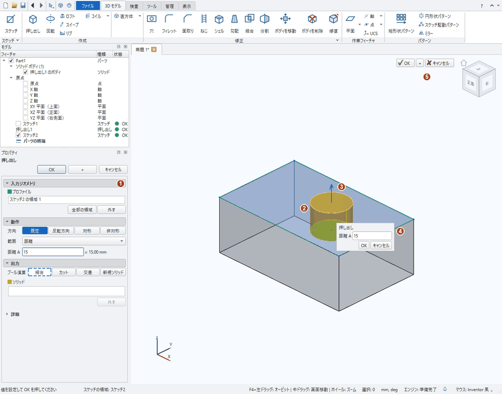
作成の流れ
リボンの［3D モデル］タブのコマンドを押します（例: リボンの［3D モデル］タブ → ［作成］パネル → ［押し出し］）。プロパティ パネルにフォームが出ます。
色付きの四角が付いた欄は、ビューやブラウザで選ぶ欄です。ビューのものをクリックすると、いま有効な欄に入り、同じ色で表示されます。必須の欄を選び終えると、次の必須の欄に進みます。
数値の欄に値を入れます。長さ・角度の欄には、式（
W / 2）やパラメータの名前も入力できます（第 10 章）。欄の右に、計算した値（= 10.00 mm）が出ます。ビューに、結果のプレビューが半透明で出ます。値を変えるたびに、プレビューが更新されます。
［OK］（Enter。Ctrl+Enter でも確定します）を押します。フィーチャがブラウザに増え、ボディが更新されます。やめるときは［キャンセル］（Esc）です。
ビューで選んだものを外すときは、欄の一覧の行を選んで［外す］を押します。プロファイルのように、もう一度クリックすると外れる欄もあります。
パネルとビュー右上の確認コーナーに、［OK］と［キャンセル］の間の［+］（適用して新規作成）があります。いまのフィーチャを確定して、同じ種類のフィーチャの作成を、同じ値のまま続けて始めます（選ぶ欄は空から始まります）。使ったスケッチは見えたままなので、同じスケッチの別の領域を続けて押し出せます。編集のときは出ません。
プレビュー・ハンドル・HUD
プレビューは、結果の種類で色が変わります。結合は黄、カットは赤、新規ソリッドは青です。元のボディは薄く表示されます。フィレットと面取りは、できる面が黄で出ます。


距離や角度の欄があるフィーチャは、ビューに矢印（距離）か円弧（角度）のハンドルが出ます。ドラッグすると値が変わり、プレビューが追いかけます。値は、画面で約 6 ピクセルに当たる量を 1・2・5 の系列で刻みます。ズームすると刻みが細かくなります。Shift を押しながらドラッグすると、刻まずに動かせます。
ハンドルの横に、数値の欄（HUD）が出ます。ビューで数字を打つと、最初の欄に入ります。Tab で次の欄、Enter で確定、Esc で取り消しです。式も打てます。
編集
できたフィーチャは、ブラウザの行をダブルクリックすると編集し直せます。ビューの面やエッジを右クリックして［フィーチャの編集］を選ぶと、その面・エッジを作ったフィーチャを編集できます。フォームとハンドルは作成のときと同じです。編集の間、そのフィーチャより後ろのフィーチャは計算されず、ブラウザで灰色の［ロールバック］になります。［OK］で確定すると、後ろのフィーチャが計算し直されます。
失敗したとき
寸法が大きすぎるなど、結果が作れない値にすると、パネルの上に理由が赤い字で出て、プレビューが消えます。理由が欄に結び付くときは、その欄にも赤い字が出ます。値を直すとプレビューが戻ります。確定したあとで失敗したフィーチャは、ブラウザの［状態］に印が出て、行にマウスを置くと理由のツールチップが出ます。そのフィーチャをダブルクリックすると、パネルに理由が出ます。値を戻すか、Ctrl+Z で直前の操作を元に戻します。
作成・編集の途中（プレビュー）の失敗は、理由が「プレビュー: 」で始まります。以下の各節の「よくある失敗」は、実際に出る文を、「プレビュー: 」を除いて挙げています。後ろのフィーチャが前のフィーチャの面やエッジを使っているときの「見つかりませんでした」の扱いは、第 9 章にあります。
6.2 押し出し
スケッチの閉じた領域（プロファイル）を、法線の方向に押し出して、ソリッドを作ります。既存のボディに足す（結合）、削る（カット）、共通部分だけ残す（交差）、別のボディにする（新規ソリッド）の 4 つの結果を選べます。開いた曲線に厚みを付ける薄肉も作れます。
プロファイルを選ぶ
リボンの［3D モデル］タブ → ［作成］パネル → ［押し出し］をクリックします（E）。見えていて、まだ使っていない最後のスケッチに閉じた領域がちょうど 1 つだけあるときは、［プロファイル］に自動で入ります。
自動で入らないときは、ビューでスケッチの領域をクリックします。クリックした領域が選ばれ、色が付きます。複数の領域を続けて選べます。隣り合う領域は 1 つのボディになります。もう一度クリックすると外れます。
ブラウザでスケッチを選ぶか、［全部の領域］を押すと、そのスケッチの全部の領域が入ります。

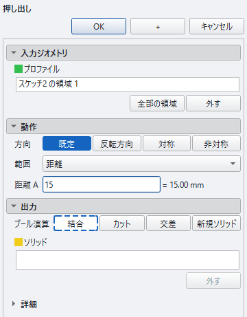

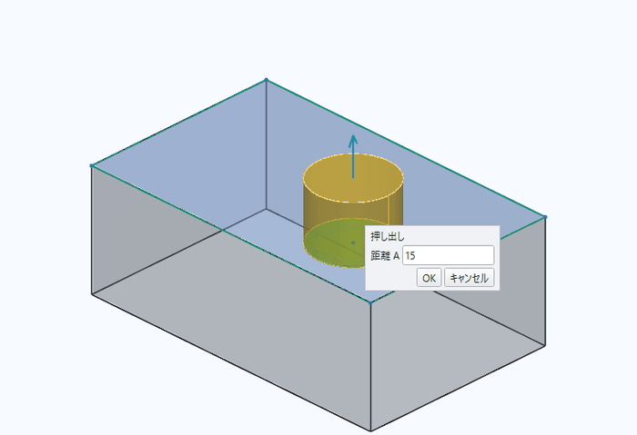
方向
［動作］の［方向］のボタンで、押し出す側を選びます。
| ボタン | 押し出す側 |
|---|---|
| ［既定］ | スケッチの法線の側です。カットは材料の側へ進みます。 |
| ［反転方向］ | 反対の側です。 |
| ［対称］ | スケッチの両側に、距離 A の半分ずつです。 |
| ［非対称］ | 片側に距離 A、反対側に距離 B です。［距離 B］と［側を反転］の欄が出ます。 |

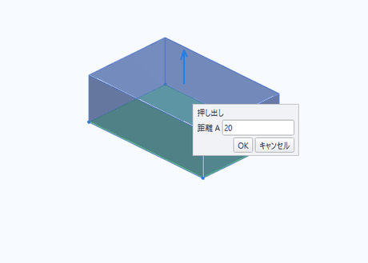

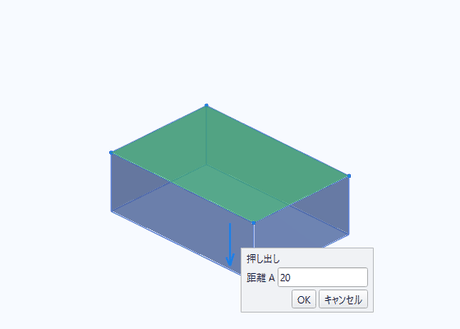

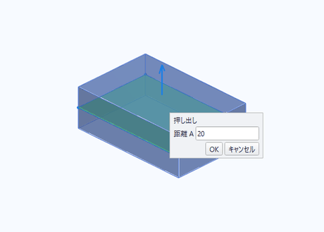

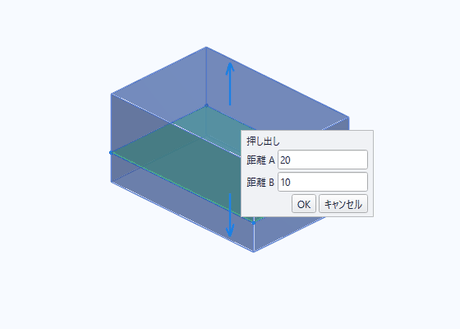

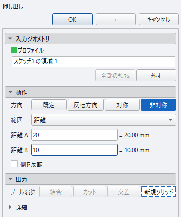
範囲
［範囲］のコンボで、どこまで押し出すかを選びます。
| 範囲 | 動作 | 追加の欄 |
|---|---|---|
| ［距離］ | 指定した距離だけ押し出します。 | ［距離 A］（非対称は［距離 B］も） |
| ［貫通］ | すべてのソリッドを貫いて押し出します。 | なし |
| ［次へ］ | 押し出しの向きの次の面まで押し出します。 | なし |
| ［終点］ | 面、作業平面、頂点、作業点のいずれかまで押し出します。 | ［終点］・［オフセット］ |
| ［ボディ］ | 選んだソリッドの面まで押し出します。 | ［ソリッド］ |
［終点］の［オフセット］は、終わりの面を押し出しの向きに動かします。負の値にすると、面の手前で止まります。

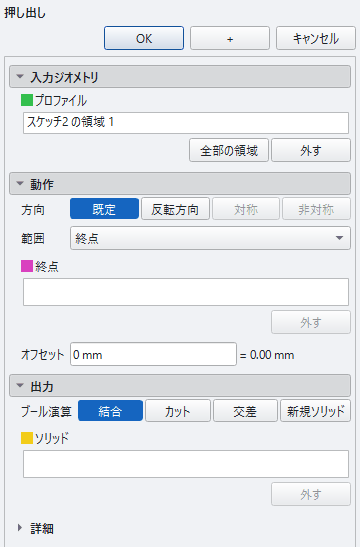
［方向］と［範囲］には、組み合わせられないものがあります。その選択肢は灰色になり、押せません。［貫通］は［非対称］と、［次へ］・［終点］・［ボディ］は［対称］・［非対称］と組み合わせられません。ボディがまだ無いときは、［貫通］も灰色です。
押せない理由は、灰色の選択肢にカーソルを合わせると、ツールチップの 1 行目に出ます。［範囲］は、リストを開いて、灰色の項目にカーソルを合わせます。2 行目は、その選択肢の説明です。
| 押せない選択肢 | 理由の文 |
|---|---|
| ボディが無いときの、［範囲］の［貫通］ | 貫通させるボディがありません |
| ［方向］が［非対称］のときの、［範囲］の［貫通］・［次へ］・［終点］・［ボディ］ | 方向: 非対称 とは組み合わせられません |
| ［範囲］が［貫通］のときの、［方向］の［非対称］ | 範囲: 貫通 とは組み合わせられません |

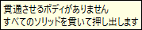
［次へ］の例です。箱の中ほどの作業平面にスケッチした円を、下の床まで押し出します。
作業平面にスケッチして円を描き、リボンの［3D モデル］タブ → ［作成］パネル → ［押し出し］を押します。
［ブール演算］を［結合］、［方向］を［反転方向］、［範囲］を［次へ］にします。プレビューが、床までの柱になります。
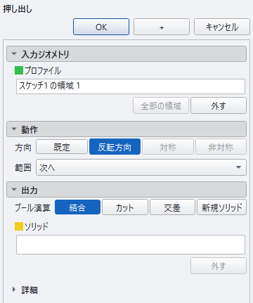
図 6-14 範囲を［次へ］にしたフォーム。 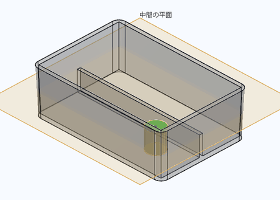
図 6-15 中間の平面の円が、床の面まで伸びるプレビュー。


ブール演算
［出力］の［ブール演算］は、押し出した形を既存のボディとどう組み合わせるかを決めます。
| ボタン | 結果 |
|---|---|
| ［結合］ | 触れているボディに足します。 |
| ［カット］ | ボディから削ります。 |
| ［交差］ | ボディと重なる部分だけ残します。 |
| ［新規ソリッド］ | 別のボディを作ります。 |
ボディがまだ無いときは、［新規ソリッド］だけが選べます。［結合］・［カット］・［交差］は灰色で、カーソルを合わせると理由が出ます（次の図）。ボディがあるときは、押し出す形がボディに触れるかどうかで、mcad が結果を予測してボタンに点線の枠を付けます。ボディに触れていれば［結合］、離れていれば［新規ソリッド］です。ボタンを自分で押すと、以後は予測しません。［ソリッド］の欄で、結合・カット・交差の相手のボディを選べます（空のときは、触れているすべてのボディです）。

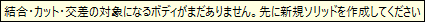
詳細
［詳細］を開くと、次の欄が出ます。

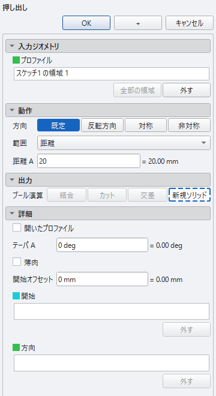
| 欄 | 意味 |
|---|---|
| ［開いたプロファイル］ | 開いたスケッチ曲線を使います。［曲線］の欄に曲線を選び、［薄肉］で厚みを付けます。 |
| ［テーパ A］ | 正の角度にすると、押し出しの向きに沿って断面が広がります。 |
| ［薄肉］ | 壁だけにします。［壁の厚さ］と［壁の位置］（［内側］・［外側］・［中央］）を指定します。開いたプロファイルでは、内側は曲線の左側、外側は右側です。 |
| ［開始オフセット］ | 押し出しの開始位置を、押し出しの向きに動かします。 |
| ［開始］ | 面か作業平面を選ぶと、そこから押し出しを始めます。 |
| ［方向］ | 軸・エッジ・スケッチの線を選ぶと、その方向に押し出します。距離はその方向に測ります。 |

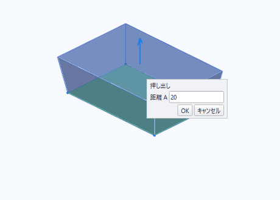

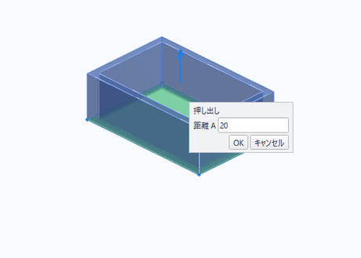
よくある失敗と直し方
| 表示される文 | 原因と直し方 |
|---|---|
| 演算が体積を変えませんでした | カットが材料に届いていません（反転方向のカットなど）。［方向］を戻すか、距離を長くします。 |
| 押し出しが面に届きません | ［次へ］の向きに、止める面がありません。［方向］を［反転方向］にするか、［範囲］を［距離］にします。 |
| 「貫通」には貫くボディが要ります | 貫く相手がありません。ボディのある側へ押し出します。 |
| 結果にソリッドがありません。断面（プロファイル）を確かめてください。 | 内側の輪郭が外側の輪郭の外にあるか、形が自分と交差しています。スケッチを直します。 |

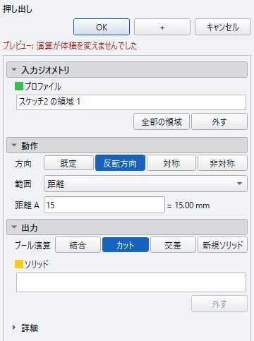
6.3 回転
スケッチのプロファイルを、軸のまわりに回して、軸対称の形（軸・円板・リングなど）を作ります。
回転軸にする線（中心線）を含むスケッチを描きます。リボンの［3D モデル］タブ → ［作成］パネル → ［回転］をクリックします（R）。閉領域が 1 つだけのときは、［プロファイル］に自動で入ります。
［軸］の欄で、回転軸にする直線を選びます。スケッチの線・作業軸・直線のエッジを選べます。
［角度 A］に角度を入力します。既定は 360° です。円弧のハンドルをドラッグして変えることもできます。
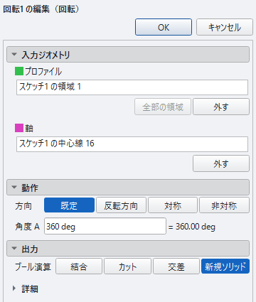
図 6-21 回転のフォーム。［入力ジオメトリ］に［プロファイル］と［軸］があります。 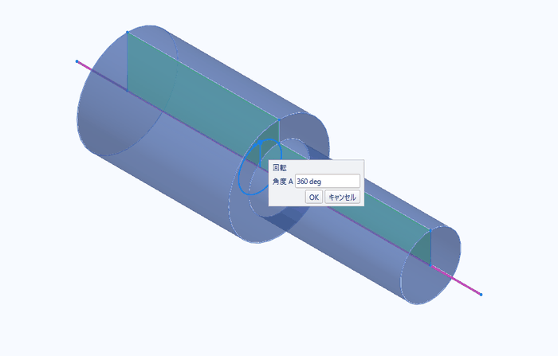
図 6-22 プレビューと、軸のまわりの円弧のハンドルです。 ［方向］と［ブール演算］は押し出しと同じ並びです。［非対称］では［角度 B］が出ます。［OK］で確定します。
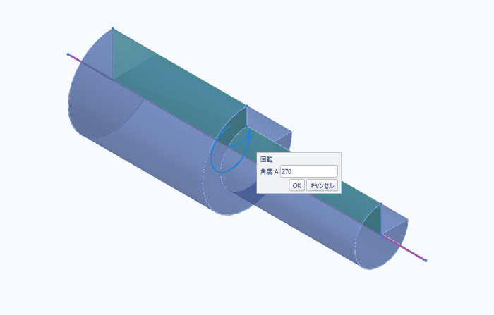
図 6-23 角度を 270° にした回転。四分の一が欠けた形になります。


［詳細］に、［開いたプロファイル］・［薄肉］・［壁の厚さ］・［壁の位置］があります。押し出しと同じ使い方です。
| 表示される文 | 原因と直し方 |
|---|---|
| 360 deg 以下にしてください | ［角度 A］の欄に出ます。360° 以下にします。 |
| 結果にソリッドがありません。断面（プロファイル）を確かめてください。… | 内側の輪郭が外側の輪郭の外にあるか、プロファイルが自分と交差しています。スケッチを直します。 |
6.4 穴
スケッチの点を位置にして、穴を開けます。単純穴のほか、規格（JIS）の表から径を引くクリアランス穴、下穴を開けてねじを示すタップ穴・テーパ タップ穴を作れます。ザグリ・皿穴・スポットフェースの座も付けられます。
位置を決める
穴の位置は、スケッチの点です。穴を開ける面に新しいスケッチを始めて点を置き、寸法で位置を決めて、スケッチを終了します（手順は第 3 章にあります）。
リボンの［3D モデル］タブ → ［修正］パネル → ［穴］をクリックします（H）。
ビューで、スケッチの点をクリックします。［位置］の欄に入ります。ブラウザでスケッチを選ぶか［全部の点］を押すと、そのスケッチの全部の点が入ります。あとでスケッチに足した点にも、穴が開きます。円や円弧の中心も位置に使えます。
穴の種類（次の小節）と、［終了条件］を選びます。
［OK］で確定します。
［開始面］は省けます。面か作業平面を選ぶと、点を穴の向きにその平面へ移してから掘ります。材料の中のスケッチ平面から掘る穴に使います。
穴の種類
［穴の種類］で、穴の作り方を選びます。選ぶと、規格の欄が出入りします。
| 穴の種類 | 径の決まり方 | 出る欄 |
|---|---|---|
| ［単純穴］ | ［直径］に入力した値です。 | ［直径］ |
| ［クリアランス穴］ | JIS B 1001 の表から、［サイズ］と［はめあい］で決まります。 | ［サイズ］・［はめあい］ |
| ［タップ穴］ | JIS B 1004 の表から、ねじの呼びの下穴径で決まります。 | ［ねじの種類］・［指定］・［等級］・［方向］・［全ねじ］・［ねじの深さ］ |
| ［テーパ タップ穴］ | Rc（管用テーパねじ）の呼びで決まります。 | ［指定］・［等級］・［方向］・［全ねじ］ |

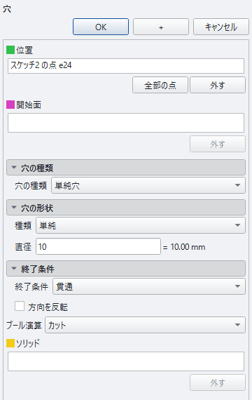

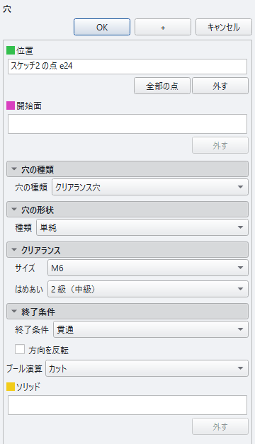

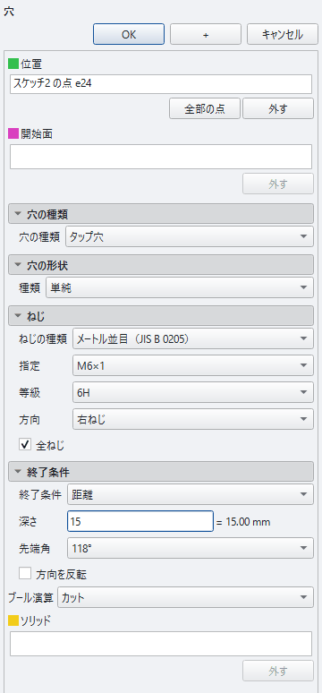

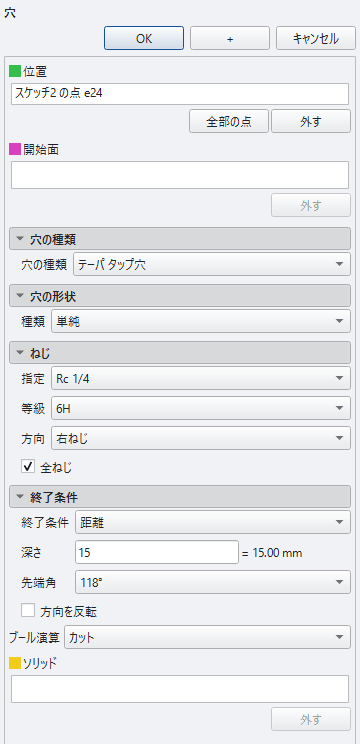
規格のサイズ・はめあい・等級
| 欄 | 選択肢 |
|---|---|
| ［サイズ］（クリアランス穴） | M1.6・M2・M2.5・M3・M4・M5・M6・M8・M10・M12・M14・M16・M18・M20・M22・M24・M30 の 17 種です。 |
| ［はめあい］ | ［1 級（精級）］・［2 級（中級）］・［3 級（粗級）］です。鋳抜き穴の 4 級はありません。 |
| ［ねじの種類］（タップ穴） | ［メートル並目（JIS B 0205）］（M1×0.25〜M36×4 の 26 種）、［メートル細目（JIS B 0205）］（18 種）、［管用平行ねじ G（JIS B 0202）］（G 1/16〜G 2 の 14 種）です。 |
| ［指定］（テーパ タップ穴） | Rc 1/16〜Rc 1 1/2 の 9 種です。 |
| ［等級］ | 6H・5H・7H・6g・6h・6e です。管用ねじの等級は、穴の情報として持つだけで、寸法には効きません。 |
| ［方向］ | ［右ねじ］・［左ねじ］です。 |
［全ねじ］にチェックを入れると、ねじが穴の全長に付きます。外すと［ねじの深さ］が出て、ねじを切る長さを指定できます。ねじの形そのものは作らず、穴の壁にらせん状の線で示します（コスメティックねじ）。この線は、確定したあとに出ます。作成中のプレビューには出ません。テーパ タップ穴は、下穴径のまっすぐな穴で作り、テーパは持ちません。
穴の形状（ザグリ・皿穴・スポットフェース）
［穴の形状］の［種類］で、穴の入口の座を選びます。
| 種類 | 出る欄 |
|---|---|
| ［単純］ | なし |
| ［ザグリ］ | ［ザグリの直径］・［ザグリの深さ］。クリアランス穴では、［規格からザグリの直径を決める］がチェックされていて、直径は JIS B 1001 の表から決まります。 |
| ［皿穴］ | ［皿穴の直径］・［皿穴の角度］（既定 90°）。 |
| ［スポットフェース］ | ［スポットフェースの直径］・［スポットフェースの深さ］（既定 1 mm）。 |
ザグリの深さは規格の表にないので、自分で入力します。ザグリの直径の表（JIS B 1001）は M2〜M24 の 14 種で、M1.6・M2.5・M30 はありません。六角穴付きボルトの頭を沈める深ザグリも、［ザグリの深さ］をボルトの頭の高さに合わせて作ります。［規格からザグリの直径を決める］のチェックを外すと、［ザグリの直径］の欄が出て、直径を入力できます。

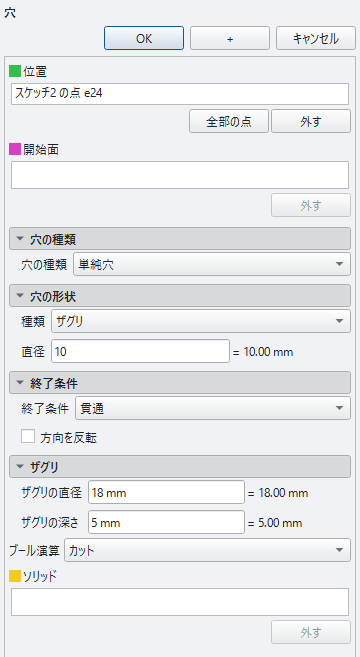

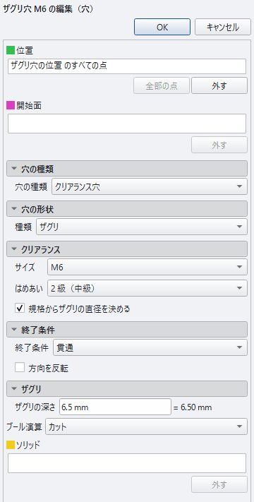
終了条件
| 終了条件 | 動作 |
|---|---|
| ［距離］ | ［深さ］の止まり穴です。［先端角］（118°・135°・［平坦］）を選べます。 |
| ［貫通］ | すべてのソリッドを貫通します。 |
| ［次へ］ | 次の面まで開けます。 |
穴の深さのハンドル（矢印）をドラッグしても、深さを変えられます。

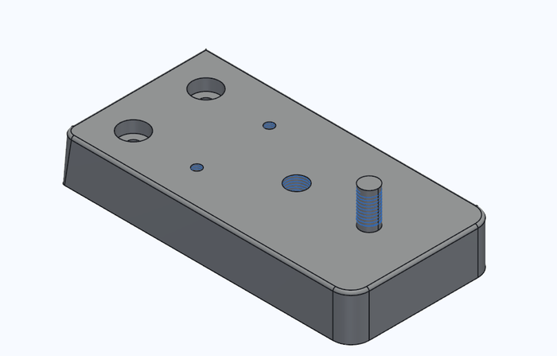
jis_holes.mcad）。ザグリ付きのクリアランス穴、タップ穴、テーパ タップ穴と、軸のコスメティックねじ（青いらせんの線）です。よくある失敗と直し方
| 表示される文 | 原因と直し方 |
|---|---|
| 配置点 1 で、ねじの深さ 16.0 mm が穴の壁（15.0 mm）より長くなっています | ねじの深さが穴の深さを超えています。［ねじの深さ］を短くするか、［深さ］を長くします。 |
| M30 はザグリの表 ザグリの直径（JIS B 1001） にありません。ザグリの直径を自分で入力してください | 規格の表にないサイズ（M1.6・M2.5・M30）です。［規格からザグリの直径を決める］のチェックを外し、直径を入力します。 |
| ザグリの深さ は穴の深さより小さくしてください | ［ザグリの深さ］が穴の深さ以上です。［ザグリの深さ］を短くするか、［深さ］を長くします。 |
| 皿穴の直径 は穴の直径より大きくしてください | ［皿穴の直径］を［直径］より大きくします。ザグリ・スポットフェースも同じで、「ザグリの直径」「スポットフェースの直径」の文が出ます。 |

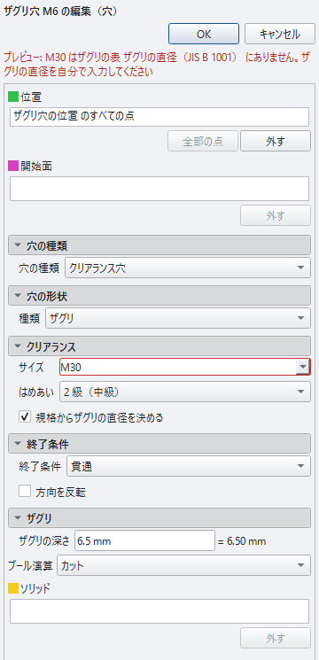
6.5 フィレット
エッジを丸めます。半径が一定のフィレットと、エッジの途中で半径が変わる可変半径のフィレットを作れます。凸の稜線も、凹の内隅も丸められます。
一定の半径
リボンの［3D モデル］タブ → ［修正］パネル → ［フィレット］をクリックします（F）。
ビューで、丸めるエッジをクリックします。クリックしたエッジが緑色で表示されます。続けて何本でも選べます。
［半径］に値を入力します。矢印のハンドルをドラッグしても変えられます。プレビューが黄色で出ます。
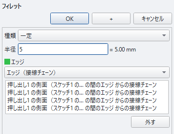
図 6-32 フィレットのフォーム。［種類］・［半径］・［エッジ］の一覧です。 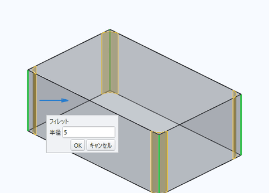
図 6-33 縦の 4 本のエッジを選んで半径 5 を入力した状態。 ［OK］で確定します。


面をクリックすると、その面の縁の全部のエッジが入ります。もう一度クリックすると外れます。
エッジの選び方（選択の意図）
［エッジ］の欄の上のコンボで、クリックしたエッジの追加のしかたを選びます。既定は［エッジ（接線チェーン）］です。
| 選び方 | クリックしたとき入るもの |
|---|---|
| ［エッジ（接線チェーン）］ | クリックしたエッジと、接線でつながるエッジです。 |
| ［エッジ（単独）］ | クリックした 1 本だけです。 |
| ［ループ］ | 面の縁の全部のエッジです。 |
| ［フィーチャ］ | そのフィーチャの全エッジです。 |
接線チェーン・ループ・フィーチャで選んだエッジは、規則として保存されます。上流の変更でエッジが増えても、同じ規則で付いていきます。

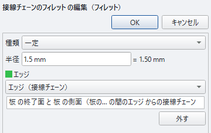

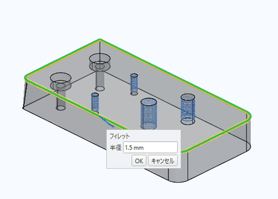
可変半径
［種類］を［可変］にすると、［半径の点］の表が出ます。エッジの途中の位置ごとに半径を指定します。
［種類］を［可変］にして、［エッジ］に 1 本のエッジを選びます。
［半径の点］の表に、［エッジ］・［位置］・［半径］の行を作ります。位置は 0（エッジの始まり）から 1（終わり）までの、弧長の割合です。［追加］を押すと、選んだ行のコピーが加わります。位置と半径を直します。
点の間を滑らかにつなぐときは、［半径の滑らかな遷移］にチェックを入れます。外すと、半径が直線的に変わります。

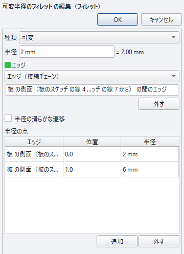

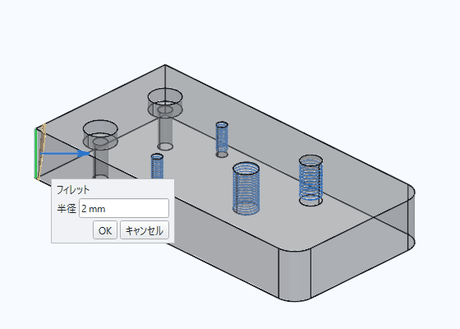
可変のときは、半径のハンドルはありません。表で直します。
よくある失敗と直し方
| 表示される文 | 原因と直し方 |
|---|---|
| 半径 50 mm のフィレットを作れませんでした: 半径が隣り合う面に対して大きすぎる可能性があります。半径を小さくしてください | ［半径］を小さくします。失敗したエッジが、ビューで赤くなります。 |
| 2 つの半径の点が同じ位置にあります（1.0） | ［追加］で足した行の［位置］を、別の位置にします。 |
| フィレットの 2 つのエッジが会う所で半径が違います | 共有する頂点では、同じ半径にします。 |
6.6 面取り
エッジの角を斜めに削ります。距離の指定のしかたが 3 つあります。
リボンの［3D モデル］タブ → ［修正］パネル → ［面取り］をクリックします（C）。
ビューで、面取りするエッジをクリックします。フィレットと同じ選び方（接線チェーンなど）が使えます。
［種類］を選び、［距離］などを入力します。矢印のハンドルをドラッグしても、距離を変えられます。
［OK］で確定します。
| 種類 | 入力する欄 |
|---|---|
| ［等距離］ | ［距離］（両側に同じ距離） |
| ［2 距離］ | ［距離］（基準面の上で測ります）と［距離 2］（もう一方の面の上で測ります） |
| ［距離と角度］ | ［距離］（基準面の上で測ります）と［角度］（基準面とのなす角です） |
2 距離と距離と角度では、［面］の欄が出ます。基準にする面を選びます。［方向を反転］にチェックを入れると、基準の面が、エッジに接するもう一方の面に替わります。

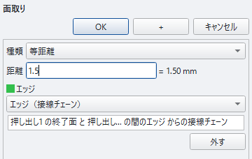

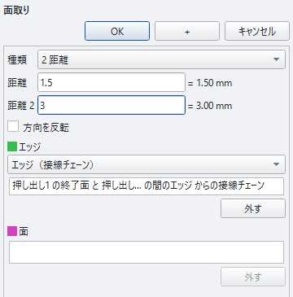

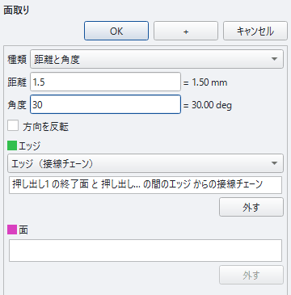

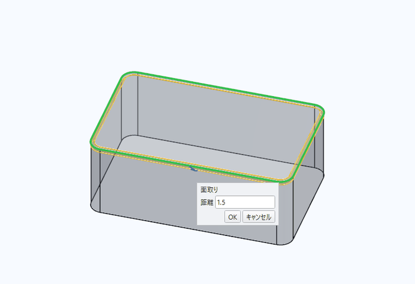
| 表示される文 | 原因と直し方 |
|---|---|
| 距離が隣り合う面に対して大きすぎる可能性があります。距離か角度を小さくしてください。 | ［距離］か［角度］を小さくします。 |
| 89 deg 以下にしてください | ［角度］の欄に出ます。89° 以下にします。 |
6.7 シェル
ソリッドの内側をくり抜いて、薄い壁の容器にします。取り除く面（開口）と、壁の厚さを指定します。
リボンの［3D モデル］タブ → ［修正］パネル → ［シェル］をクリックします。
ビューで、取り除く面をクリックします。［削除する面］に入ります。［面のチェーンを自動で選ぶ］にチェックがあると、選んだ面に接する面も選ばれます。複数の面を取り除けます。
［厚さ］に壁の厚さを入力します。矢印のハンドルをドラッグしても変えられます。
［方向］を選びます。［内側］は、元の外形のまま内側をくり抜きます。［外側］は、元の形を内側にして外へ厚みを足します。［両側］は、面の両側に厚みを付けます。
［OK］で確定します。

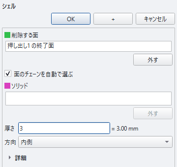

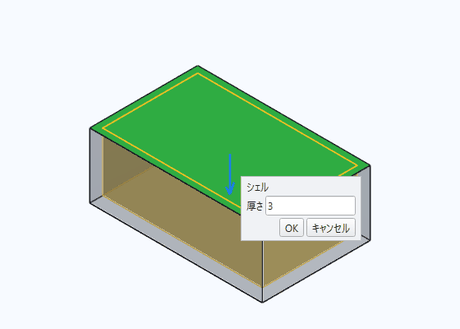
［削除する面］を選ばないと、開口の無い中空のソリッドになります。［ソリッド］の欄で、シェルするボディを選べます。［詳細］の［角の種類］（［自動］・［シャープ］・［丸み］）で、壁の角の形を選べます。
| 表示される文 | 原因と直し方 |
|---|---|
| 演算が形状を変えませんでした。厚さが壁に対して大きすぎる可能性があります（最も薄い部分の半分より小さくする必要があります）。厚さを小さくするか、取り除く面を確かめてください。 | ［厚さ］を小さくします。取り除く面が合っているかも確かめます。 |
| この形はシェルできません: エッジが片方の端で尖り、もう一方の端で接線になっています… | 矩形から円へのロフトの側面などです。内側の形をカットして作ります。 |

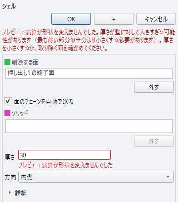
6.8 勾配
面に抜き勾配を付けます。固定平面（動かさない面）と抜き方向を決め、勾配を付ける面を選びます。
リボンの［3D モデル］タブ → ［修正］パネル → ［勾配］をクリックします（D）。
［固定平面］に、動かさない平面（面か作業平面）を選びます。この平面にある稜線は動きません。
［抜き方向］は省けます。省くと、固定平面の法線の方向です。エッジ・作業軸・スケッチの線を選ぶと、その方向になります。
［面］の欄で、勾配を付ける面を続けてクリックします。［面のチェーンを自動で選ぶ］にチェックがあると、接線でつながる面にも付きます。
［勾配角］に角度を入力します。正の角度にすると、抜き方向に沿って面が内側へ傾きます。［方向を反転］で、抜き方向を逆にできます。［OK］で確定します。

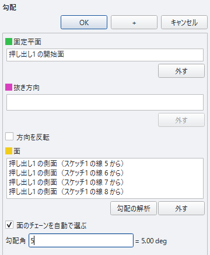

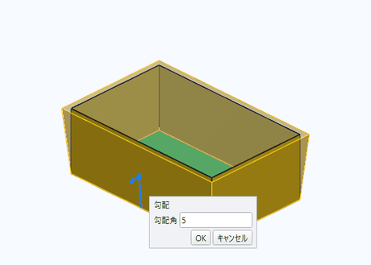
勾配の確認
［面］の欄の［勾配の解析］を押すと、ビューの面が、勾配の角度で色分けされます。右に凡例（［勾配角（度）］）が出ます。正の勾配は赤〜橙、0° は灰色、負の勾配（型から抜けないアンダーカット）は青です。±10° を超える角度は、端の色になります。抜き方向に垂直な上面・底面は、端の色です。フォームを閉じると、色は消えます。

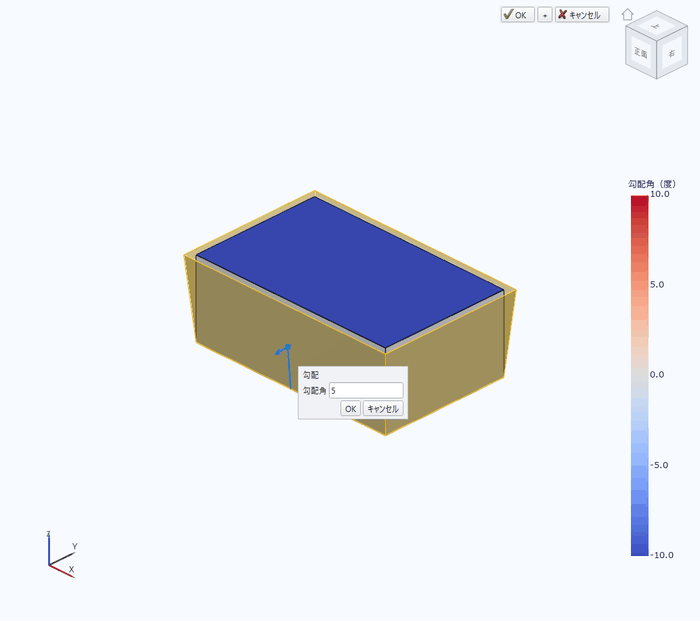
| 表示される文 | 原因と直し方 |
|---|---|
| 勾配角を 0 にすることはできません／89 deg 以下にしてください | ［勾配角］の欄に出ます。0° より大きく、89° 以下にします。 |
| 引き抜き方向と勾配の角度を確かめてください。引き抜き方向と平行な面には勾配を付けられません。 | 抜き方向に平行な面は、勾配を付けられません。［抜き方向］や［面］を確かめます。 |
6.9 リブ
スケッチの線（開いた曲線）から、補強の板（リブ）を作ります。リブはボディに結合されます。
リブの断面の線を、ボディの内側の平面（作業平面など）にスケッチします。リボンの［3D モデル］タブ → ［作成］パネル → ［リブ］をクリックします。
［プロファイル］の欄で、スケッチの線を選びます。
［方向］を選びます。［スケッチ平面に垂直］は、線を平面に垂直な向きに押し出す板です。［スケッチ平面に平行］は、平面に平行な向きです。
［厚さ］と、［厚さの方向］（［対称］・［方向 1］・［方向 2］）を決めます。
［範囲］を選びます。［次へ］は、次の面まで伸びます。［距離指定］は、［距離］の高さです。
［プロファイルを延長］にチェックがあると、線の両端が壁に届くまで延びます。［方向を反転］で、リブを立ち上げる向きを逆にします。［OK］で確定します。

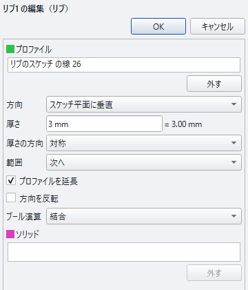

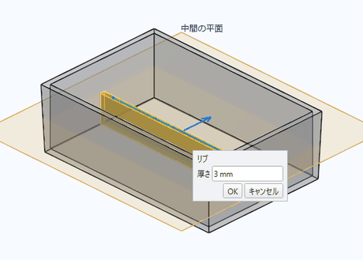
| 表示される文 | 原因と直し方 |
|---|---|
| リブがソリッドに届きません | リブがボディに触れていません。スケッチの位置か、［範囲］・［方向を反転］を確かめます。 |
| 閉じた曲線には、リブを掃引する向きがありません | 閉じた曲線は使えません。開いた線にします。 |
6.10 プリミティブ
スケッチを描かずに、寸法だけで基本の形を作ります。［直方体］・［円柱］・［球］・［トーラス］・［円錐］・［くさび］の 6 つがあります。
リボンの［3D モデル］タブ → ［作成］パネル → ［プリミティブ］の▼ → ［直方体］をクリックします。同じ分割ボタンの▼から、ほかの形を選べます。
寸法を入力します。形によって欄が違います（下の表）。
置く平面を指定するときは、［平面］の欄で、面か作業平面をクリックします。空のときは XY 平面です。［位置 X］・［位置 Y］で、平面の上の位置を指定します。
［方向を反転］で、平面の法線の逆向きに作れます。［ブール演算］は押し出しと同じです。［OK］で確定します。

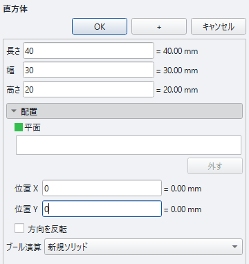

| 形 | 寸法の欄 | 位置 X・Y が指す点 |
|---|---|---|
| ［直方体］ | ［長さ］・［幅］・［高さ］ | 底面の中心 |
| ［円柱］ | ［直径］・［高さ］ | 底面の中心 |
| ［球］ | ［直径］ | 球の中心（平面の上） |
| ［トーラス］ | ［リングの直径］・［チューブの直径］ | 中心（平面の上。軸は法線） |
| ［円錐］ | ［底面の直径］・［上面の直径］（0 で頂点）・［高さ］ | 底面の中心 |
| ［くさび］ | ［長さ］・［幅］・［高さ］・［上面の長さ］・［上面の幅］（0 で稜線・頂点） | 底面の中心 |

| 表示される文 | 原因と直し方 |
|---|---|
| チューブの直径はリングの直径より小さくしてください | ［チューブの直径］を［リングの直径］より小さくします。 |
| 上面は底面より大きくできません | くさびの［上面の長さ］・［上面の幅］を、［長さ］・［幅］以下にします。 |
| カットがどのボディにも触れていません。カットする形状の位置と深さを確かめて、材料と重なるようにしてください。 | ［ブール演算］が［カット］のとき、位置が材料から離れています。位置を直します。 |
6.11 次に読む章
スイープ・ロフト・コイル・パターン・ミラー: 第 7 章 フィーチャ（スイープ・ロフト・コイル・パターンなど）
ブラウザでのフィーチャの管理: 第 9 章 ブラウザとフィーチャの管理
寸法を式やパラメータで結ぶ: 第 10 章 パラメータと式